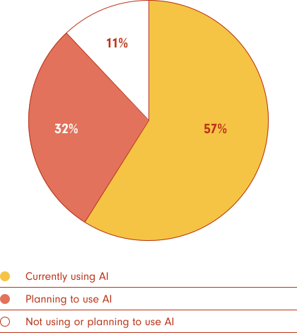

Business Wire
Rewiring PR for the AI Age: Business Wire's Strategic Transformation

Competitive & Market Analysis
Business Design
North Star Development
Brand Strategy
Product Strategy & Concept Dev
Customer Journey Mapping
Brand Design
Product Design
Identity Systems & Style Guides
UI/UX Design
Communications Strategy
Rewiring PR for the AI Age: Business Wire's Strategic Transformation

Introduction
In the rapidly evolving world of corporate communica-tions, Business Wire, a long-standing leader in press release distribution, recognized the need for a significant shift. The team at Kei was engaged to help Business Wire navigate this transformation, moving from a traditional PR service provider to a comprehensive, modern commu-nications ecosystem.
The Vision: Democratizing XR
The Kei team began by assessing the current state of the communications industry. "The
media world is evolving rapidly," noted Kevin Farnham, one of Kei's partners. "Much of
the content people consume now exists outside the traditional print and broadcast
structure."
This shift has created a complex web of challenges for communications professionals:
Shrinking Newsrooms
According to the Pew Research Center's 2023 report, newsroom employment in the U.S. has continued to decline, with a 26% drop between 2008 and 2022. This trend has accelerated, with a 4% decline just between 2020 and 2022.
Pew Research Center, "Newsroom employment continued to fall in 2022"
Information Overload
A study by Agility PR Solutions found that 47% of journalists receive 11-100 press releases daily, emphasizing the need for PR tools that can cut through the noise.
Agility PR Solutions, "2021 Global Journalist Survey"
These changes have led to the convergence of PR and marketing departments, the rise of influencer marketing, and direct brand-journalist relationships on social media platforms. The challenge was clear: Business Wire needed to do more than just keep pace—it needed to redefine the industry itself.
A Human-Centered Approach
To tackle this challenge, the Kei team initiated extensive research, engaging a diverse array of stakeholders including communications teams, brand managers, journalists, PR agencies, and influencers. This human-centered approach revealed a clear need: an integrated platform that could support the entire communications workflow, from managing media contacts to creating content and measuring success.
The research uncovered several key themes:
01.
Democratization of Media
Brands now have more direct channels to connect with end-users.
02.
Content Arbitrage
There's a growing need to fine-tune outreach efforts to connect the right content with the right publishers.
03.
Mobile-First Mentality
Content must be designed with a mobile-first approach.
04.
Noise and Filtering
There's an opportunity to match content creators with journalists based on shared interests.
05.
Building Stronger Connections
Brands and PR professionals want to build strong relationships with journalists without overwhelming them.
The Solution: Land Tender
Armed with these insights, the Kei team set out to design a revolutionary platform. The result was a concept for a seamless, AI-enhanced system that bridges the gap between strategy and execution, offering a truly integrated approach to communications.
The platform's proposed features include:
The platform was designed to adapt to each user's role, providing customized workflows that link seamlessly with other team members' tasks.
AI Usage
According to Muck Rack's 2023 State of PR report, 57% of PR professionals are already using AI tools in their work, with another 32% planning to start using them in the next year. The most common uses include writing assistance (55%), research (46%), and media list building (35%).
Muck Rack, "The State of PR 2023"
Gail Heimann, President and CEO of Weber Shandwick, stated: "The convergence of technology and communications is reshaping our industry. PR professionals need to be adept at using data, AI, and digital platforms to create more targeted, measurable, and impactful campaigns.”
PRovoke Media, "PRovoke Global Summit: 'Technology Is An Opportunity, Not A Threat'"
Market Validation and Pricing Strategy
To ensure the concept resonated with potential users, an independent market research firm
was commissioned to test it. The results were highly positive across all target
segments, with 84% of corporate enterprise professionals, 91% of PR agency
professionals, and 81% of content influencers expressing interest.
The market research also helped determine the right pricing strategy, with corporate
enterprise professionals considering $3,000 per month as the ideal price point, PR
agency professionals indicating a willingness to pay $3,500 per month, and content
influencers suggesting an ideal price of $25-$30 per month for a more limited version of
the platform.
The Road Ahead
While the full implementation of this platform is still in progress, the project has
already had a substantial impact on Business Wire's strategic direction. It has
positioned the company at the forefront of the PR tech revolution, particularly in terms
of AI integration.
The project comes at a crucial time for the industry. The global public relations market
size is expected to grow from $88.13 billion in 2021 to $129.35 billion by 2025 at a
CAGR of 10.2%. Additionally, the influencer marketing industry is set to grow to
approximately $16.4 billion in 2022, up from $1.7 billion in 2016, highlighting a shift
in how brands communicate with audiences.
The project highlighted several key lessons:
The Road Ahead
While the full implementation of this platform is still in progress, the project has
already had a substantial impact on Business Wire's strategic direction. It has
positioned the company at the forefront of the PR tech revolution, particularly in terms
of AI integration.
The project comes at a crucial time for the industry. The global public relations market
size is expected to grow from $88.13 billion in 2021 to $129.35 billion by 2025 at a
CAGR of 10.2%. Additionally, the influencer marketing industry is set to grow to
approximately $16.4 billion in 2022, up from $1.7 billion in 2016, highlighting a shift
in how brands communicate with audiences.
The project highlighted several key lessons:
01
The power of systems thinking in solving complex, interconnected problems
02
The importance of designing for reality, considering all facets of implementation including hidden costs and organizational readiness
03
The value of bringing together diverse perspectives in the design process
04
The potential of AI to transform traditional industries when applied thoughtfully
As Business Wire continues to refine and develop this platform, it stands poised to
potentially redefine the nature of public relations and corporate communi-cations.
The concept promises a future where messages find their intended audiences more
effectively, relationships between brands and media are more mutually beneficial,
and the impact of communication can be clearly measured and continually
improved.
This transformation project serves as an example of how even established industries
can be revitalized through innovative thinking and a commitment to solving
real-world problems. It demonstrates the value of a strategic, human-centered
approach to design and the potential for technology to address complex challenges in
the communications landscape.